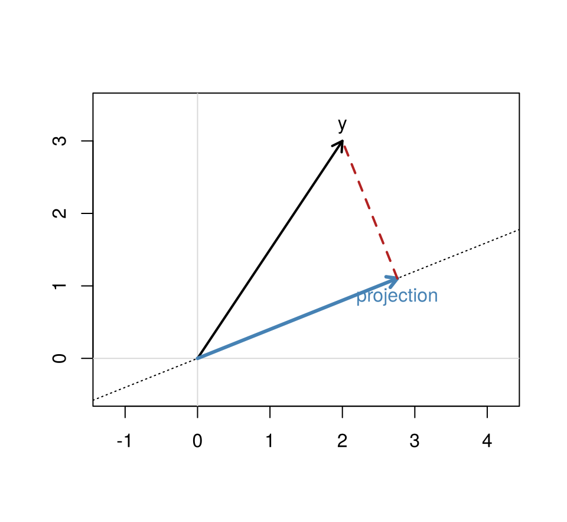

DEF — definition KEY — key idea to remember ↪ — bridge to another day ⚠ — common pitfall
You have met linear algebra before. This chapter is not a second course. It collects what the rest of this book uses, and it gives every operation a statistical meaning. Two results are the destination: least squares as a projection, and the eigendecomposition of a covariance matrix.
Throughout, the data are stored in a matrix \(\mathbf{X}\) with \(n\) rows (samples) and \(p\) columns (variables). In an expression matrix as it is commonly stored, genes are the rows and samples the columns, so be careful: statistical software usually expects the transpose.
⚠dim(X) should be the first thing you check. prcomp, lm and glmnet treat rows as observations.
Vectors, lengths and angles
A sample measured on \(p\) genes is a point in \(p\)-dimensional space, or equivalently a vector. Three operations give that space its geometry.
The length (or 2-norm) of a vector is \(\lVert\mathbf{a}\rVert = \sqrt{\mathbf{a}^\top\mathbf{a}}\), and the angle \(\theta\) between two vectors satisfies
Two vectors are orthogonal when their dot product is zero.
KEY — For centred variables the cosine of the angle is the correlation. Orthogonal means uncorrelated.
set.seed(1)a <-rnorm(50); b <-0.6* a +rnorm(50, 0, 0.8)a_c <- a -mean(a); b_c <- b -mean(b)c(cosine =sum(a_c * b_c) / (sqrt(sum(a_c^2)) *sqrt(sum(b_c^2))),correlation =cor(a, b))
#> cosine correlation
#> 0.5176274 0.5176274
The Euclidean distance between two samples is the length of their difference, \(\lVert\mathbf{a} - \mathbf{b}\rVert\). Clustering (Day 5), KNN and SVM (Day 8) are built on it.
Projection
The projection of \(\mathbf{y}\) onto a unit vector \(\mathbf{u}\) is the shadow of \(\mathbf{y}\) on the line through \(\mathbf{u}\):
The number \(\mathbf{u}^\top\mathbf{y}\) is the coordinate of \(\mathbf{y}\) along \(\mathbf{u}\). What is left over, \(\mathbf{y} - (\mathbf{u}^\top\mathbf{y})\mathbf{u}\), is orthogonal to \(\mathbf{u}\).
y <-c(2, 3)u <-c(1, 0.4); u <- u /sqrt(sum(u^2))p <-sum(u * y) * uplot(NA, xlim =c(-0.5, 3.5), ylim =c(-0.5, 3.5), asp =1, xlab ="", ylab ="")abline(h =0, v =0, col ="grey85")abline(0, u[2] / u[1], lty =3)arrows(0, 0, y[1], y[2], lwd =2, length =0.1)arrows(0, 0, p[1], p[2], lwd =3, col ="steelblue", length =0.1)segments(p[1], p[2], y[1], y[2], col ="firebrick", lwd =2, lty =2)text(y[1], y[2], "y", pos =3); text(p[1], p[2], "projection", pos =1, col ="steelblue")

sum((y - p) * u) # the residual is orthogonal to u
#> [1] 7.771561e-16
Hold on to this figure. PCA finds the direction with the largest projected variance. Regression projects the response onto the space spanned by the predictors.
Matrices as transformations
A matrix multiplied by a vector gives a new vector. The product \(\mathbf{A}\mathbf{x}\) is a weighted sum of the columns of \(\mathbf{A}\), with weights \(\mathbf{x}\):
Every fitted value of a linear model has this form: a weighted sum of predictors, with the coefficients as weights.
A <-matrix(c(2, 0, 1, 3), 2)x <-c(1, 2)A %*% x
#> [,1]
#> [1,] 4
#> [2,] 6
x[1] * A[, 1] + x[2] * A[, 2]
#> [1] 4 6
The set of all such weighted sums is the column space of \(\mathbf{A}\). Its dimension is the rank, the number of independent columns.
DEF — A matrix has full column rank if no column is a weighted sum of the others. If \(p > n\) this is impossible: an \(n \times p\) matrix has rank at most \(n\).
The transpose\(\mathbf{A}^\top\) swaps rows and columns. The inverse\(\mathbf{A}^{-1}\) of a square matrix undoes it: \(\mathbf{A}^{-1}\mathbf{A} = \mathbf{I}\). It exists only if the matrix has full rank.
The fitted values \(\hat{\mathbf{y}} = \mathbf{X}\hat{\boldsymbol\beta}\) must lie in the column space of \(\mathbf{X}\). The point in that space closest to \(\mathbf{y}\) is the projection, and at the projection the residual is orthogonal to every column:
round(t(X) %*%resid(fit), 8) # orthogonal to every column
#> [,1]
#> (Intercept) 0
#> wt 0
#> hp 0
The solution requires \(\mathbf{X}^\top\mathbf{X}\) to be invertible. Two situations threaten this. If \(p > n\), it is singular and there is no unique solution. If predictors are strongly correlated, it is nearly singular, and small changes in the data produce large changes in \(\hat{\boldsymbol\beta}\).
↪ Day 9: ridge regression replaces \(\mathbf{X}^\top\mathbf{X}\) by \(\mathbf{X}^\top\mathbf{X} + \lambda\mathbf{I}\), which is always invertible for \(\lambda > 0\).
The hat matrix
Substituting \(\hat{\boldsymbol\beta}\) into \(\hat{\mathbf{y}} = \mathbf{X}\hat{\boldsymbol\beta}\) shows that the fitted values are a linear function of the observations:
\(\mathbf{H}\) is called the hat matrix, because it puts the hat on \(\mathbf{y}\). It is the projection onto the column space of \(\mathbf{X}\), and three properties follow.
Its trace is the number of parameters:\(\operatorname{tr}(\mathbf{H}) = \operatorname{tr}\big((\mathbf{X}^\top\mathbf{X})^{-1}\mathbf{X}^\top\mathbf{X}\big) = \operatorname{tr}(\mathbf{I}_p) = p\).
Its diagonal measures leverage:\(h_{ii}\) says how much observation \(i\) determines its own fitted value.
H <- X %*%solve(t(X) %*% X) %*%t(X)c(trace =sum(diag(H)),HH_minus_H =max(abs(H %*% H - H)),vs_hatvalues =max(abs(diag(H) -hatvalues(fit))))
KEY — The trace of the hat matrix counts the degrees of freedom a fit consumes. For least squares it is \(p\). Day 9 uses the same trace to define the effective degrees of freedom of ridge regression, which is no longer a whole number.
↪ Day 6 uses \(\operatorname{tr}(\mathbf{H}) = p\) to show where the penalty in AIC comes from. Day 7 uses the leverages \(h_{ii}\) for a shortcut to leave-one-out cross-validation.
How lm really computes: the QR decomposition
The formula \((\mathbf{X}^\top\mathbf{X})^{-1}\mathbf{X}^\top\mathbf{y}\) is how least squares is derived. It is not how it is computed. Forming \(\mathbf{X}^\top\mathbf{X}\) squares the condition number of the problem, the ratio of the largest to the smallest singular value, which measures how strongly rounding errors are amplified.
lm instead factorises \(\mathbf{X} = \mathbf{Q}\mathbf{R}\), with orthonormal columns in \(\mathbf{Q}\) (\(\mathbf{Q}^\top\mathbf{Q} = \mathbf{I}\)) and an upper-triangular \(\mathbf{R}\). The normal equations then collapse:
and a triangular system is solved by back-substitution, starting from the last equation. The Gram–Schmidt algorithm builds \(\mathbf{Q}\) one column at a time, by repeatedly using the projection of the previous section: from each column of \(\mathbf{X}\), subtract its projections onto the columns already processed, then scale what is left to length one.
gram_schmidt <-function(X) { Q <- X R <-matrix(0, ncol(X), ncol(X))for (j inseq_len(ncol(X))) { v <- X[, j]for (i inseq_len(j -1)) { R[i, j] <-sum(Q[, i] * v) # coordinate along an earlier direction v <- v - R[i, j] * Q[, i] # remove that projection } R[j, j] <-sqrt(sum(v^2)) Q[, j] <- v / R[j, j] # normalise what is left }list(Q = Q, R = R)}qr_X <-gram_schmidt(X)round(t(qr_X$Q) %*% qr_X$Q, 10) # orthonormal columns
#> (Intercept) wt hp
#> (Intercept) 1 0 0
#> wt 0 1 0
#> hp 0 0 1
#> qr lm
#> (Intercept) 37.22727012 37.22727012
#> wt -3.87783074 -3.87783074
#> hp -0.03177295 -0.03177295
DEF — The \(j\)-th column of \(\mathbf{Q}\) is the part of predictor \(j\) that the earlier predictors cannot explain. That is why a regression coefficient measures the effect of a predictor after adjusting for the others.
Production code uses Householder reflections, a numerically more stable route to the same factorisation, but the idea is the one above.
Least squares by gradient descent
A third route needs no factorisation at all, and it is the route machine learning takes when a problem has no formula. The residual sum of squares \(\text{RSS}(\boldsymbol\beta) = \lVert\mathbf{y} - \mathbf{X}\boldsymbol\beta\rVert^2\) has gradient
The step size \(\eta\) matters. The iteration converges only if \(\eta < 2/\lambda_{\max}\), where \(\lambda_{\max}\) is the largest eigenvalue of \(\mathbf{X}^\top\mathbf{X}\) (eigenvalues follow below), and it converges slowly when the eigenvalues are very unequal.
Zs <-cbind(1, scale(mtcars[, c("wt", "hp")])) # standardised predictorsgrad_descent <-function(Z, y, eta, iters) { b <-rep(0, ncol(Z))for (i inseq_len(iters)) b <- b + eta *drop(t(Z) %*% (y - Z %*% b)) b}l_max <-max(eigen(t(Zs) %*% Zs)$values)rbind(after_10 =grad_descent(Zs, y, 1/ l_max, 10),after_200 =grad_descent(Zs, y, 1/ l_max, 200),exact =coef(lm(y ~ Zs -1)),eta_too_big =grad_descent(Zs, y, 2.1/ l_max, 50))
With a suitable step the iteration reaches the least-squares solution. With a step that is slightly too large it diverges. Standardising the predictors, as done here, makes the eigenvalues more equal and speeds convergence considerably, which is one reason why machine-learning methods so often require scaled inputs.
↪ Day 6 fits logistic regression by a close relative, Newton’s method. Day 11 shows that boosting is gradient descent in a space of functions.
Variance and covariance in matrix form
Centre each column of \(\mathbf{X}\) by subtracting its mean, and call the result \(\mathbf{X}_c\). The covariance matrix is
Element \(S_{jk}\) is the dot product of centred columns \(j\) and \(k\), divided by \(n-1\). The diagonal holds the variances. The matrix is symmetric.
with \(\operatorname{tr}\) the sum of the diagonal and \(\det\) the determinant.
A <-matrix(c(2, 1, 1, 2), 2)e <-eigen(A)e$values # 3 and 1
#> [1] 3 1
A %*% e$vectors[, 1] # same direction as v1 ...
#> [,1]
#> [1,] 2.12132
#> [2,] 2.12132
e$values[1] * e$vectors[, 1] # ... stretched by 3
#> [1] 2.12132 2.12132
Your earlier linear algebra treated general matrices, including those with complex eigenvalues. Everything in this book needs only the symmetric case, which is much better behaved.
The spectral theorem
A real symmetric matrix \(\mathbf{S}\) has real eigenvalues, and its eigenvectors can be chosen orthogonal and of unit length. With the eigenvectors as the columns of \(\mathbf{V}\) and the eigenvalues on the diagonal of \(\boldsymbol\Lambda\), \[
\mathbf{S} = \mathbf{V}\boldsymbol\Lambda\mathbf{V}^\top, \qquad \mathbf{V}^\top\mathbf{V} = \mathbf{I} .
\]
A covariance matrix is symmetric, and its eigenvalues are never negative, because \(\mathbf{w}^\top\mathbf{S}\mathbf{w}\) is a variance.
What this means for a covariance matrix
If \(\mathbf{v}\) is a unit eigenvector of \(\mathbf{S}\), then the variance of the data along it is
KEY — For a covariance matrix, an eigenvalue is a variance: the variance of the data along its eigenvector.
Rotating the data onto the eigenvectors gives new variables that are uncorrelated, and the total variance is unchanged, because the trace equals the sum of the eigenvalues.
e <-eigen(S)Z <- Xc %*% e$vectors # rotate the dataround(cov(Z), 4) # diagonal: the off-diagonal covariances are gone
The characteristic equation is a hand method for \(2 \times 2\) matrices. For twenty thousand genes it is useless, and software works iteratively. The simplest algorithm is power iteration: start from any vector, multiply by \(\mathbf{S}\), rescale to length one, and repeat.
To see why this works, write the starting vector in terms of the eigenvectors, \(\mathbf{v} = c_1\mathbf{v}_1 + \dots + c_p\mathbf{v}_p\). After \(t\) multiplications,
and since \(\lambda_2/\lambda_1 < 1\), every term except the first dies out. The convergence rate is the ratio \(\lambda_2/\lambda_1\).
power_iteration <-function(S, iters =100) { v <-rep(1, ncol(S)) /sqrt(ncol(S))for (i inseq_len(iters)) { v <- S %*% v v <- v /sqrt(sum(v^2)) }list(vector =drop(v), value =drop(t(v) %*% S %*% v))}p1 <-power_iteration(S)rbind(power_iteration =c(p1$value, p1$vector),eigen =c(e$values[1], e$vectors[, 1]))
The first column is the eigenvalue, the others the eigenvector. A sign flip of the whole vector would describe the same direction. The next eigenvector is found by deflation: remove the direction just found from the matrix, and iterate again.
S_deflated <- S - p1$value * p1$vector %*%t(p1$vector)c(power_iteration =power_iteration(S_deflated)$value, eigen = e$values[2])
#> power_iteration eigen
#> 0.2426707 0.2426707
KEY — The leading eigenvector of a covariance matrix can be found with nothing but repeated matrix–vector multiplication. That is why PCA remains feasible on very large data.
The singular value decomposition
Any \(n \times p\) matrix, square or not, can be written as
with orthogonal columns in \(\mathbf{U}\) and \(\mathbf{V}\), and non-negative singular values on the diagonal of \(\mathbf{D}\). Substituting in the covariance matrix gives